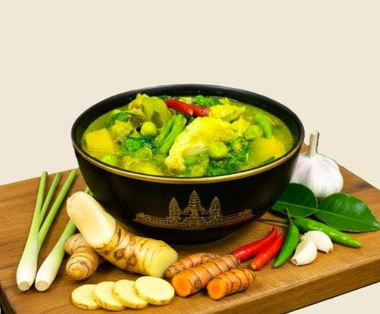
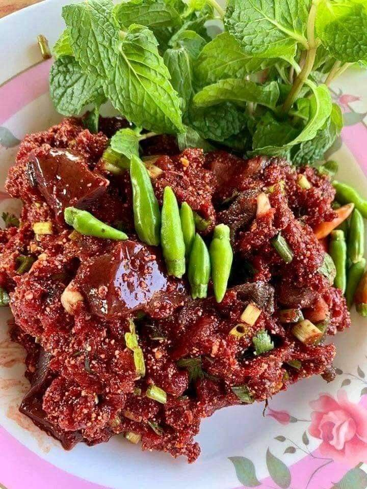
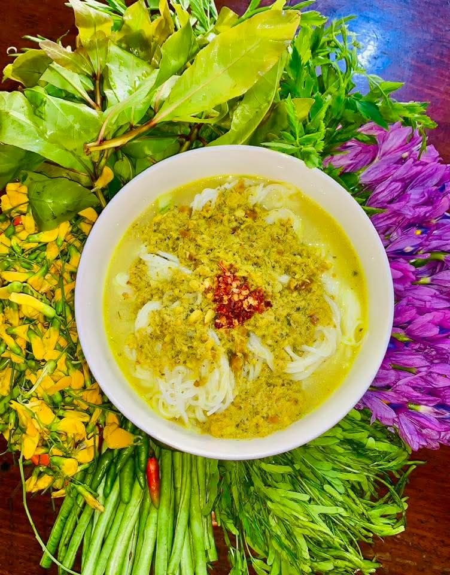
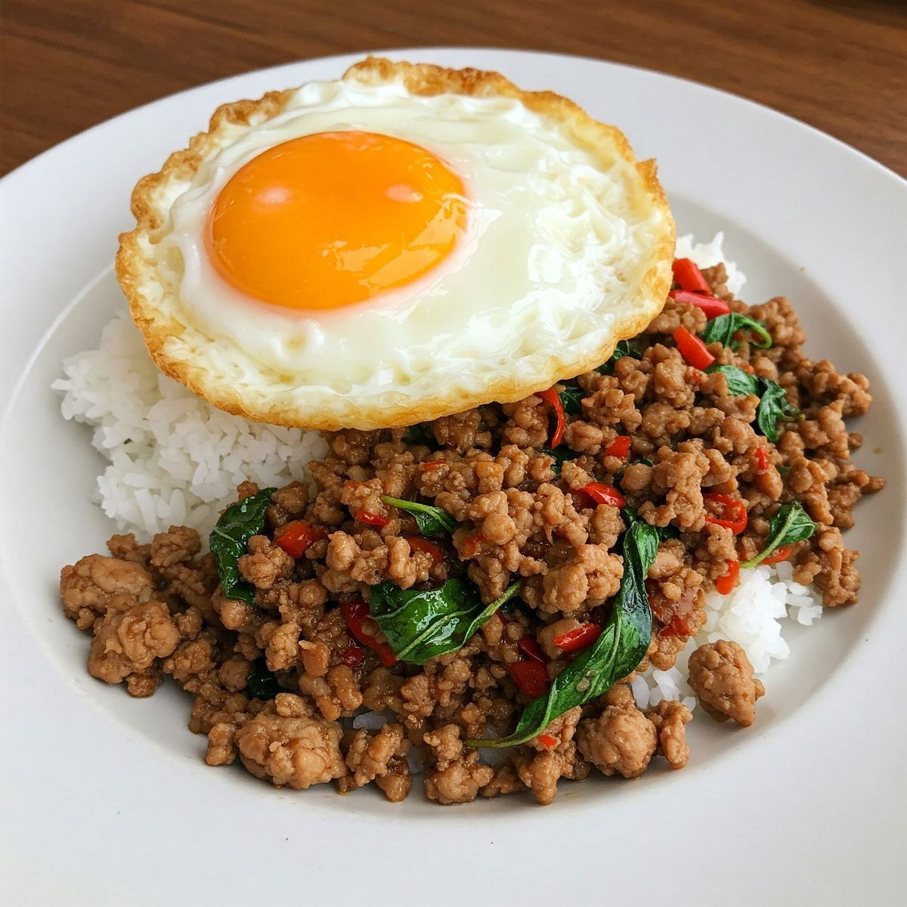
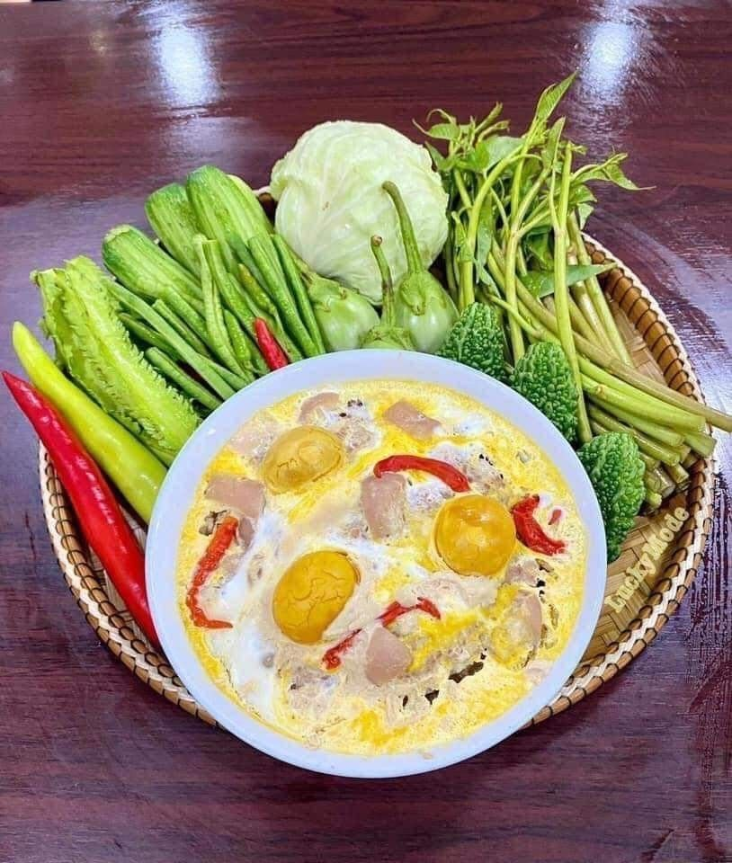
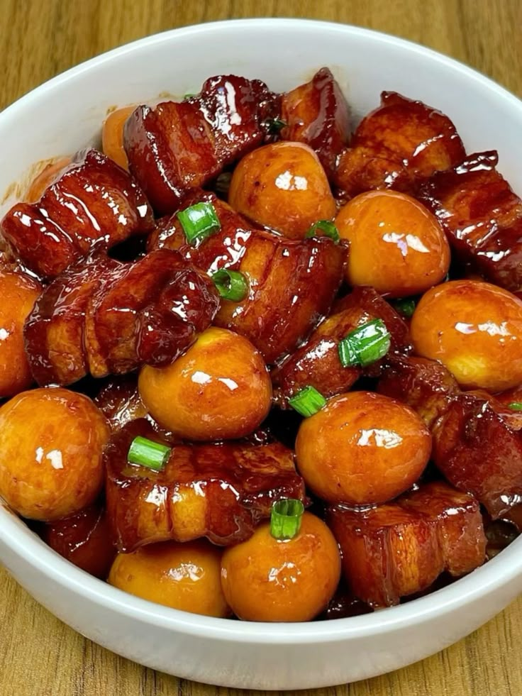
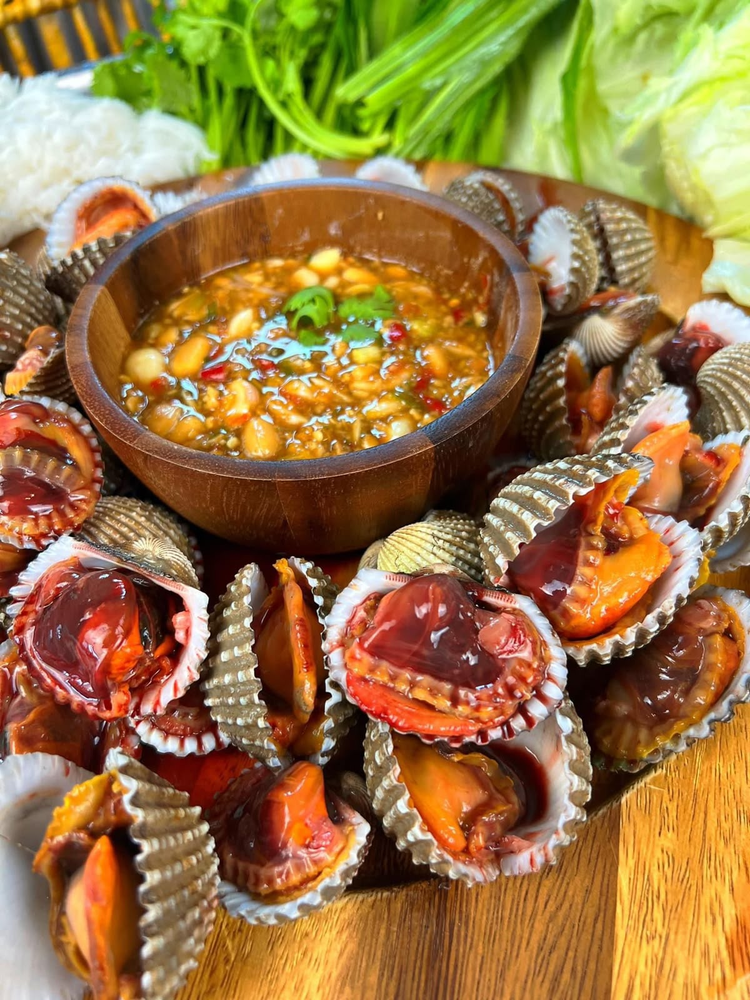

ទំព័រលម្អិត
ម្ហូបពិសេស៖ អាម៉ុកត្រី
អាម៉ុកត្រីជាមុខម្ហូបបែបប្រពៃណីខ្មែរ ដែលមានរសជាតិឈ្ងុយឆ្ងាញ់ និងទន់ល្មម។ ត្រីត្រូវបានចំហុយជាមួយគ្រឿងខ្មែរ និង ខ្ទិះដូង បន្ថែមស្លឹកក្រូចសើច ធ្វើអោយមានក្លិនក្រអូបពិសេស និងរសជាតិមិនអាចបំភ្លេចបាន។

អាម៉ុកត្រីជាម្ហូបតំណាងរបស់ខ្មែរ ដែលចំហុយក្នុងស្លឹកចេកជាមួយខ្ទិះដូង និងគ្រឿងឆ្ងាញ់ បង្កើតក្លិនឈ្ងុយ និងរសជាតិឆ្ញាញ់។
ពេលចម្អិន
25 នាទី
តម្លៃ
$2.50
ម្ហូបពិសេស៖ សម្លកកូរ
សម្លកកូរ គឺជាមុខម្ហូបប្រពៃណីខ្មែរ ដែលមានប្រជាប្រិយភាពខ្លាំង និងត្រូវបានគេចាត់ទុកថាជា “សម្លជាតិ” មួយរបស់កម្ពុជា។

សម្លកកូរ ជាសម្លដែលមានលក្ខណៈខាប់ និងសម្បូរទៅដោយបន្លែផ្សេងៗ។ វាមានរសជាតិឈ្ងុយឆ្ងាញ់ ដោយសារប្រើគ្រឿង “គ្រឿងខ្មែរ ” ដែលបុកពីស្លឹកគ្រឿង និងឬសរុក្ខជាតិធម្មជាតិ។
ពេលចម្អិន
25 នាទី
តម្លៃ
$1.00
ម្ហូបពិសេស៖ ប្រហុកអាំងជ្រុញ
ប្រហុកអាំងជ្រុញ គឺជាមុខម្ហូបដ៏មានប្រជាប្រិយភាពបំផុតមួយបែបស្រុកស្រែចម្ការរបស់ខ្មែរយើង ដែលមានរសជាតិ "ឈ្ងុយដិត និងមានជាតិ" ខុសប្លែកពីប្រហុកធម្មតា។ អ្វីដែលធ្វើឱ្យវាពិសេស គឺបច្ចេកទេសនៃការធ្វើ ដែលបញ្ចូលគ្នារវាងការ "បុក" និងការ "អាំង"។

សម្លកកូរ ជាសម្លដែលមានលក្ខណៈខាប់ និងសម្បូរទៅដោយបន្លែផ្សេងៗ។ វាមានរសជាតិឈ្ងុយឆ្ងាញ់ ដោយសារប្រើគ្រឿង “គ្រឿងខ្មែរ ” ដែលបុកពីស្លឹកគ្រឿង និងឬសរុក្ខជាតិធម្មជាតិ។
ពេលចម្អិន
25 នាទី
តម្លៃ
$5.50
ម្ហូបពិសេស៖ ភ្លាសាច់គោ
ភ្លាសាច់គោ គឺជាជម្រើសដំបូងគេសម្រាប់បុរសៗ ឬការជួបជុំមិត្តភក្តិ ព្រោះវាត្រូវជាតិគ្នាបំផុតជាមួយ ស្រាបៀរត្រជាក់ៗ

រសជាតិភ្លាសាច់គោគឺមានភាព "ស្រស់ស្រាយ ហឹរខ្លាំង និងមានក្លិនឈ្ងុយអង្ករលីង
ពេលចម្អិន
15 នាទី
តម្លៃ
$4.50
ម្ហូបពិសេស៖ មាន់ដុត
មាន់ដុត គឺជារសជាតិអាហារបែបខ្មែរដ៏ពេញនិយមបំផុត ជាពិសេសសម្រាប់ដំណើរកម្សាន្តនៅចុងសប្តាហ៍ជាមួយក្រុមគ្រួសារ និងមិត្តភក្តិ។

មាន់ដុត ឈ្ងុយគ្រឿងខ្មែរ (ស្លឹកគ្រៃ-រមៀត), ផ្អែមស្ករត្នោត, ប្រៃល្មមតាមបែបទឹកត្រី និងមានភាពស្រស់ស្រាយដោយសារការជ្រលក់ជាមួយទឹកត្រីកោះកុងដ៏ហិរជូរអែម
ពេលចម្អិន
45 នាទី
តម្លៃ
$9.99
ម្ហូបពិសេស៖ នំបញ្ចុកសម្លប្រហើរ
នំបញ្ចុក គឺជាអាហារដ៏ពេញនិយមបំផុតមួយនៅក្នុងប្រទេសកម្ពុជា ដែលជារឿយៗត្រូវបានគេហៅថា "អាហារអត្តសញ្ញាណជាតិ"

នំបញ្ចុកសម្លប្រហើរ មានរសជាតិ ស្រាល ស្រស់ស្រាយ និងឈ្ងុយគ្រឿងស្លឹកគ្រៃខ្ជាយ។ វាមិនហឹរ មិនផ្អែមពេក និងមិនប្រៃពេកទេ គឺជាតុល្យភាពនៃរសជាតិបែបធម្មជាតិពិតៗ។
ពេលចម្អិន
15 នាទី
តម្លៃ
$1.00
ម្ហូបពិសេស៖ ឡុកឡាក់សាច់គោ
ឡុកឡាក់សាច់គោ គឺជាការរួមបញ្ចូលគ្នារវាងរសជាតិបែបខ្មែរ និងឥទ្ធិពលម្ហូបបារាំង

ឡុកឡាក់សាច់គោ គឺជាការរួមបញ្ចូលគ្នាយ៉ាងល្អឥតខ្ចោះរវាង ភាពផ្អែមមុតនៃសាច់ និង ភាពជូរហឹរនៃទឹកជ្រលក់។
ពេលចម្អិន
20 នាទី
តម្លៃ
$2.00
ម្ហូបពិសេស៖ សាច់គោអាំងទឹកប្រហុក
សាច់គោអាំងទឹកប្រហុក គឺជាម្ហូបដ៏ពេញនិយមបំផុតមួយសម្រាប់បងប្អូនខ្មែរយើង ជាពិសេសញ៉ាំជាលក្ខណៈគ្រួសារ ឬមិត្តភក្តិនៅពេលល្ងាច

រសជាតិចម្បងគឺចេញពី ទឹកប្រហុក។ វាមានភាព ប្រៃបែបមុត ប៉ុន្តែត្រូវបានកាត់បន្ថយដោយ ជាតិជូរ ខ្លាំងពីទឹកក្រូចឆ្មារ និង ជាតិផ្អែម ឡែមៗពីស្ករត្នោត។ វាជាការបន្សំដែលធ្វើឱ្យអ្នកញ៉ាំហើយ ចង់ញ៉ាំទៀតមិនងាយទ្រលាន់។
ពេលចម្អិន
25 នាទី
តម្លៃ
$9.99
ម្ហូបពិសេស៖ ត្រីអាំងជ្រក់ស្វាយ
ត្រីអាំងជ្រក់ស្វាយ ជាមុខម្ហូបប្រពៃណីខ្មែរដ៏ពេញនិយម និងមានឱជារសឆ្ងាញ់ពិសា ដែលរួមបញ្ចូលគ្នានូវក្លិនឈ្ងុយនៃត្រីអាំង និងរសជាតិជូរអែម ហឹរតិចៗនៃជ្រក់ស្វាយ។

ត្រីអាំងជ្រក់ស្វាយ គឺជាការរួមបញ្ចូលគ្នារវាង ភាពស្រស់បំព្រងនៃសាច់ត្រី និង ភាពស្រួយជូរអែមនៃជ្រក់ស្វាយ
ពេលចម្អិន
20 នាទី
តម្លៃ
$4.5
ម្ហូបពិសេស៖ ឆាក្ដៅ
ឆាក្ដៅ គឺជាមុខម្ហូបខ្មែរដ៏ពេញនិយមម្យ៉ាងដែលមានរសជាតិហិរ ឈ្ងុយគ្រឿងស្លឹកគ្រៃ និងមានក្លិនប្រហើរពីស្លឹកម្រះព្រៅ

ឆាក្ដៅ មានរសជាតិ "ហឹរ ឈ្ងុយគ្រឿងបុក ឆួលក្លិនម្រះព្រៅ និងដិតជាតិប្រៃផ្អែម"
ពេលចម្អិន
30 នាទី
តម្លៃ
$1.50
ម្ហូបពិសេស៖ បាយឆាម្រះព្រៅ
បាយឆាម្រះព្រៅ គឺជាការរួមបញ្ចូលគ្នានៃ "ក្លិនក្រអូបឆួល ភាពហឹរដិត ភាពខ្ទិះនៃពងទាចៀន" សម្រាប់អ្នកចូលចិត្តអាហារដែលមានរសជាតិដិត។

ក្លិនម្រះព្រៅឈ្ងុយជាប់ច្រមុះ បូករួមនឹងជាតិហឹរតិចៗ និងភាពខ្ទិះនៃពងទា ធ្វើឱ្យវាជាជម្រើសដ៏ល្អបំផុតសម្រាប់អ្នក
ពេលចម្អិន
20 នាទី
តម្លៃ
$2.50
ម្ហូបពិសេស៖ ញាំស្វាយខ្ចី
ការញាំស្វាយខ្ចីគឺជាជម្រើសដ៏ពេញនិយមសម្រាប់អាហារសម្រន់ដែលមានរសជាតិជូរអែម និងហិរ។

ស្វាយខ្ចី ជាមួយបន្លែ និងទឹកត្រីក្រូចឆ្មាររសជាតិជូរអែម។
ពេលចម្អិន
10 នាទី
តម្លៃ
$1.00
ម្ហូបពិសេស៖ ប្រហុកចំហុយ
ប្រហុកចំហុយ ជាការយកប្រហុកមកច្នៃជាមួយគ្រឿងផ្សំផ្សេងៗ រួចយកទៅចំហុយឱ្យឆ្អិន ដែលផ្ដល់នូវរសជាតិដិតដល់ និងក្លិនក្រអូបឈ្ងុយប្លែកពីប្រហុកឆៅ ឬប្រហុកលីង

ប្រហុកចំហុយ មានរសជាតិប្រៃបន្តិច ឈ្ងុយខ្លាំង និងអាចមានហឹរបន្តិច បើមានម្ទេស។
ពេលចម្អិន
30 នាទី
តម្លៃ
$2.50
ម្ហូបពិសេស៖ ស្ងោរជ្រក់មាន់
រសជាតិស្ងោរជ្រក់មាន់ គឺមានភាពតុល្យភាពរវាង ជូរ ប្រៃ និងផ្អែមតិចៗ
ពេលចម្អិន
35 នាទី
តម្លៃ
$1.75
ម្ហូបពិសេស៖ សម្លម្ជូរគ្រឿង
សម្លម្ជូរគ្រឿង គឺជាមុខម្ហូបខ្មែរដ៏ពេញនិយមដែលមានរសជាតិឈ្ងុយឆ្ងាញ់ បែបដិតខ្លាំង និងមានអត្ថប្រយោជន៍ដល់សុខភាពតាមរយៈគ្រឿងទេសធម្មជាតិ។

សម្លម្ជូរគ្រឿង មានរសជាតិ "ជូរអែម ឈ្ងុយគ្រឿងបុក និងដិតជាតិប្រហុក"
ពេលចម្អិន
30 នាទី
តម្លៃ
$2.50
ម្ហូបពិសេស៖ ខសាច់ជ្រូក
ខសាច់ជ្រូកឬ ខសាច់ជ្រូកពងទា គឺជាមុខម្ហូបដ៏ពេញនិយមដែលមានរសជាតិផ្អែម និងឈ្ងុយឈ្ងប់។

ខសាច់ជ្រូក គឺវាមានលក្ខណៈ "ដិត ផ្អែមឡមៗ និងខ្ទិះខ្លាញ់"
ពេលចម្អិន
55 នាទី
តម្លៃ
$1.50
ម្ហូបពិសេស៖ ងាវទឹកម្រេច
ម្ហូបមួយមុខនេះគឺ ងាវចំហុយទឹកម្រេច ឬ ងាវឆាម្រេចខ្ចី ដែលមានរសជាតិហិរបែបឈ្ងុយឆ្ងាញ់ និងជួយបណ្តេញខ្យល់បានយ៉ាងល្អ។

ងាវទឹកម្រេច គឺជាមុខម្ហូបពេញនិយមមួយបែបក្នុងស្រុកខ្មែរ ដែលសាច់ងាវនឹងមានភាព ទន់ ល្មើយ និងមានភាពស្វិតបន្តិចៗ
ពេលចម្អិន
20 នាទី
តម្លៃ
$5.55
ម្ហូបពិសេស៖ សម្លរការី
សម្លរការី គឺជាម្ហូបប្រពៃណីខ្មែរ ដែលមានរសជាតិផ្អែមបន្តិច ខាប់ និងឈ្ងុយ។ វាត្រូវបានធ្វើពីសាច់មាន់ ឬសាច់គោ លាយជាមួយទឹកដោះគោដូង និងគ្រឿងការី ដែលផ្តល់ក្លិនឈ្ងុយពិសេស។

សម្លរការីទន់មានរសជាតិឆ្ញាញ់ ជាមួយដំឡូងផ្អែម និងខ្ទិះដូង។
ពេលចម្អិន
35 នាទី
តម្លៃ
$2.50
ម្ហូបពិសេស៖ មាន់បំពងល្ង
មាន់បំពងល្ងគឺជាម្ហូបសម្រន់ដ៏ពេញនិយមដែលមានរសជាតិឈ្ងុយឆ្ងាញ់ និងស្រួយស្របតាមចំណង់ចំណូលចិត្តរបស់មនុស្សគ្រប់វ័យ។ ខាងក្រោមនេះជារបៀបធ្វើងាយៗ។

មាន់បំពងល្ង មានរសជាតិដែលផ្ដោតសំខាន់ទៅលើ ភាពស្រួយ និង ក្លិនឈ្ងុយ
ពេលចម្អិន
30 នាទី
តម្លៃ
$3.50